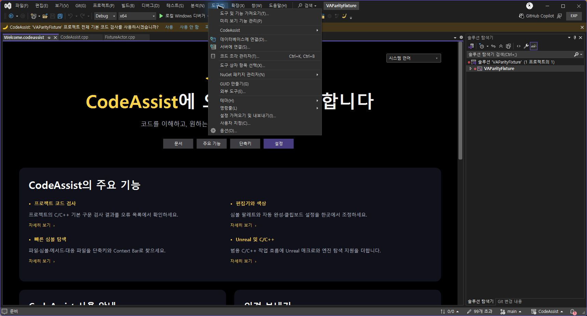

도구 메뉴 최상위에 나열되던 CodeAssist 명령 74개를 ‘CodeAssist’ 하위 메뉴 하나로 옮겼습니다. 기존 명령 ID, 단축키 24개, 도구 모음과 편집기 컨텍스트 메뉴 배치는 유지했습니다.
실제 설치된 Visual Studio에서 도구 메뉴와 하위 메뉴 열기를 확인했습니다. Release 빌드, 메뉴 XML 구조, 설치 바이너리 6개 해시 검사를 통과했습니다. 이번 메뉴 배치 변경에서 전체 기능을 재실행하지는 않았습니다.

전체 유사도 미측정, 부분 대응108/108·완전 검증0/108. 문서 기반 부분 명세108/108, 전체 역분석 완료율 미확인. 전체 기능·옵션·리팩터링·성능 대조는 남아 있습니다.